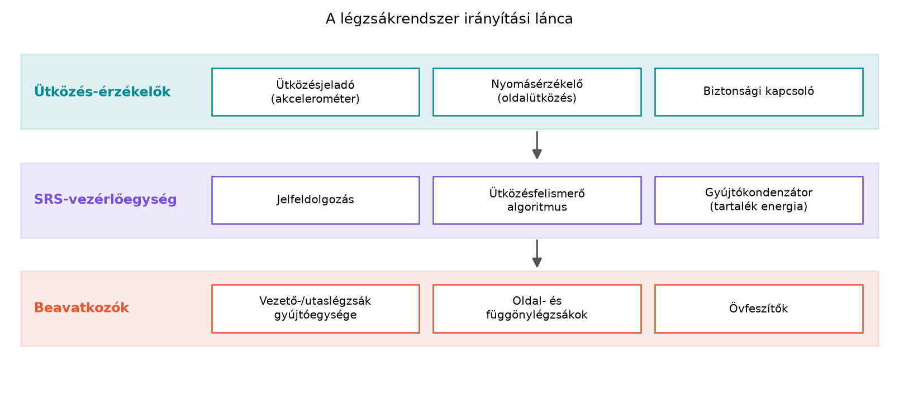

Egyre több autójavítási munka érinti a belső teret: kopott kormánygomb, zörgő utasoldali műszerfal, elakadt ülésállító, vagy éppen a kormánykerékbe szerelt multimédia-gombok cseréje. Ha a szerelő ekkor véletlenül megsért egy légzsákvezetéket, az a műszerfalon megjelenő, folyamatosan világító légzsák-visszajelző lámpához (SRS-lámpa, Supplemental Restraint System) vezethet, és a jármű a következő hatósági műszaki vizsgán elbukhat. Ennél súlyosabb következmény, hogy egy hirtelen ütközésnél a rendszer nem, vagy rossz időben nyílhat ki, ami életveszélyes.
Ebben az alfejezetben a passzív biztonsági elektronika – a légzsákok és az övfeszítők – rendszerét tanuljuk meg: hogyan érzékeli a balesetet, hogyan működnek a pirotechnikai egységek, és milyen szigorú munkavédelmi szabályokkal kell ezeken az alkatrészeken dolgozni.
Képzeljük el egy autó utasterét ütközés előtt és ütközés közben: a vezető előtt a kormánykerék közepén egy légzsákmodul van, az utas előtt a műszerfalban, a tetőkeretben függönylégzsákok, az ülésekben oldallégzsákok, és a biztonsági övek zárjában vagy felcsévélőjében egy feszítő. A központi vezérlőegység, az SRS-ECU, az utastér középső alagútjában vagy az ülés alatt ül, és ütközéskor néhány ezredmásodperc alatt el kell döntenie, hogy begyújtsa-e a megfelelő pirotechnikai tölteteket.
Az alábbi rétegábra a légzsákrendszer irányítási láncát mutatja: az ütközésérzékelők jelét a vezérlőegység feldolgozza, majd beavatkozókat, azaz gyújtóegységeket aktivál.

Definíció. A passzív biztonsági rendszer (légzsákrendszer, Supplemental Restraint System, SRS) olyan járműrendszer, amelynek feladata, hogy baleset esetén a jármű utasait a belső térrészben megtartsa, és a karosszéria kemény részeivel (kormány, műszerfal, üveg, oldalajtó) való ütközést megakadályozza vagy csillapítsa. „Passzív”, mert a vezetőnek nem kell előzetesen tevékenykednie az aktiválásához.
Összefüggés. A légzsák nem helyettesíti a biztonsági övet; a mai rendszerekben az öv és a légzsák együtt, összehangoltan működik. Az övfeszítő az ütközés első tizedmásodperceiben feszesre húzza az övet, hogy a test még a légzsák felfúvódása előtt ne mozdulhasson túlzottan előre.
Definíció. A gyújtóegység (squib; műhelyi nevén „pattanópatron” vagy „gyutacs”) olyan, elektromosan indítható pirotechnikai beavatkozó, amely egy fém- vagy műanyag házban lévő kis ellenállású izzógyújtót és egy gyors égésű hajtóanyagot tartalmaz. Amikor a vezérlőegység meghatározott nagyságú áramot vezet át rajta, a gyújtószál felhevül, a hajtóanyag gázt fejleszt, és a hozzá kapcsolt szerkezetet (légzsákot, övfeszítő dugattyút) működteti.
Definíció. A kormánykerék-spirálkábel (clock spring; forgókapcsoló) egy lapos, spirálban feltekert, műanyagba ágyazott több erű vezetékcsík, amely a kormánykerék elfordulása közben is folyamatos villamos kapcsolatot tart a kormányon elhelyezett eszközök (légzsák, kürt, multimédia-gombok, fűtés) és a kormányoszlopban lévő rögzített huzalozás között. Előfeszítéssel szerelik, és csak a gyártó által megadott fordulatszám-tartományban (balra és jobbra a középhelyzettől) fordulhat el; a rossz pozícióban rögzített spirálkábel a kormány elfordításakor elszakadhat.
Az (a) rajz a rétegábra elemeit térben mutatja: elöl és oldalt az ütközésérzékelők, a középalagútban az SRS-ECU, a kormányban, a műszerfalban, az ülésekben és a tetőkeret mentén a légzsákok, a csévélőknél és a csatoknál az övfeszítők. A (b) rajz a vezetőoldali modul rétegeit, a (c) a spirálkábel feltekert szalagvezetékét és a középhelyzet-jelölést mutatja. A HTML-változatban az érzékelők, az ECU és a beavatkozók rétege külön ki-be kapcsolható.
A rendszer fő részei:
Működési sorrend frontális ütközésben:
Az idővonalon látszik, hogy a teljes folyamat nagyjából egy tizedmásodperc: a döntés kb. 8–20 ms alatt születik, az övfeszítő a légzsák előtt működik, a zsák 30–50 ms alatt fúvódik fel, és az utas csak ezután érkezik bele. A sebességgörbe a kidolgozott példa lineáris közelítése (50 km/h → 0 120 ms alatt, kb. 116 m/s²). A HTML-változat lépésenként lejátssza az eseményeket egy sematikus utas–öv–légzsák rajzzal.
Rendszer önellenőrzése és hibajelzés. Induláskor az SRS-ECU belső öntesztet futtat: ellenőrzi a gyújtóegységek bekötését, az érzékelők és a saját reléinek ellenállásait. A műszercsoportban lévő légzsák-visszajelző lámpa 3–7 másodpercig világít, majd elalszik. Ha menet közben újra kigyullad, a vezérlőegység hibát tárolt, és a rendszer egyes funkcióit letiltják.
Utasoldali légzsák kikapcsolása. Tilos. Menetiránynak háttal beszerelt gyerekülést bekapcsolt első utaslégzsák elé szerelni – a kioldó légzsák a gyermeket halálosan megsebesítheti. Ha ilyen gyerekülést mégis az első utasülésen kell szállítani, az utasoldali légzsákot a gyártó által előírt módon ki kell kapcsolni (ellenőrizendő: kezelési útmutató és hatályos előírás, ECE R16/R94). Ennek megoldása típustól függően: - kulccsal működtetett kapcsoló a műszerfalon vagy az ajtó mellett; - a diagnosztikai csatlakozón keresztül, gyártói rendszerteszterrel végzett kódolás; - automatikus felismerés (a gyárilag szerelt, azonosított gyerekülés jelenléte esetén).
A kikapcsolt állapotot külön visszajelző lámpa jelzi; felnőtt utas szállításakor a légzsákot vissza kell kapcsolni, és a gyártói előírást be kell tartani (ellenőrizendő: a gyártói utasítás szerint).
Előírás. Az utasvédelmi rendszerekre és a légzsákokra vonatkozó ENSZ-EGB (UNECE) előírások különböző vizsgálati feltételeket írnak elő; például: - a frontális ütközés elleni védelemre és az első légzsákokra vonatkozó követelmények ENSZ-EGB előírásban szerepelnek (a feladathoz jelzett, ellenőrizendő: ECE R94/R16), - az oldalütközés elleni védelemre és a megfelelő vizsgálatra vonatkozó előírások szintén ENSZ-EGB dokumentumban találhatók (ellenőrizendő: ECE R95), - a biztonsági övek és az övfeszítővel egybeépített rendszerek jóváhagyási követelményei külön előírásban szerepelnek (ellenőrizendő: ECE R16).
Szabály. Légzsák- és övfeszítő-rendszeren végzett munka előtt a gyártó javítási utasításában megadott sorrendet kell követni: gyújtás kikapcsolása, a kulcs eltávolítása, az akkumulátor negatív pólusának lekötése, és a megadott várakozási idő betartása. A várakozási időt a gyártó azért írja elő, mert a vezérlőegységen belüli kondenzátorokban még energia maradhat, és a rendszernek időre van szüksége az önmentesítéshez. A várakozási idő a gyártói előírás szerint (jellemzően 1–10 perc; ellenőrizendő: gyártói javítási adat).
Számítás. Mennyi az átlagos lassulás, ha egy jármű 50 km/h kezdeti sebességről 0,12 másodperc alatt áll meg egy ütközésnél? A légzsákrendszer gyújtási döntése miatt ezt a nagyságrendet kell érzékelni.
Adott: , , . Keresett: . Képlet: . Behelyettesítés: . Ellenőrzés: A negatív előjel lassulást jelent; , ami a valós frontális ütközések jellemző csúcslassulásának megfelelő nagyságrend. Ezért kell az érzékelőnek és a döntési algoritmusnak 10 ms-os időskálán dolgoznia. ∎
Példa. Egy autóban a gyújtás ráadása után az SRS-lámpa ötször felvillan, majd folyamatosan világít. Ez a gyakorlatban tárolt hibakódot jelez. A rendszerteszter csatlakoztatása után a hibakód például a vezetőoldali övfeszítő áramkörének szakadását mutatja. A hiba oka lehet terhelt csatlakozó az ülés alatt, sérült vezeték vagy hibás övfeszítő. Először a gyártói útmutató szerint meg kell keresni a csatlakozót, feszültségmentesítés után ellenőrizni az érintkezést, majd a szigetelést, és csak ezután a komponenst.
A légzsákrendszer ellenőrzésekor az alábbi pontokat járjuk végig:
Ellenőrzőlista légzsákhiba felvételekor:
Egy használt autónál a vevő azt panaszolja, hogy az ülés takarítása után a légzsák-lámpa folyamatosan ég. A szerelő a rendszerteszterrel kiolvassa a hibát: az utasoldali oldallégzsák gyújtóegysége szakadást jelez. Műhelyi vizsgálat során az ülés alatt megtalálják a narancssárga csatlakozót, amely nincs teljesen összepattintva. A csatlakozó kioldásához a munkalap szerint előbb a gyújtást kikapcsolják, az akkumulátorsarut lekötik, és a gyártói várakozási időt betartják. A csatlakozót szemrevételezéssel ellenőrzik, visszapattintják, visszacsatlakoztatják az akkumulátort, majd a hibakódot törlik. Az SRS-lámpa elalszik, a rendszer ismét rendelkezésre áll. A tanulság: a légzsákrendszer nemcsak pirotechnikából áll, a hibák jelentős része egyszerű csatlakozóhiba, de a munkát mindig a pirotechnikai biztonsági szabályokkal kezdjük.
Feladat: Vezetőoldali légzsákmodul ellenőrzése és cseréje (tanműhelyi, oktatói felügyelettel).
Környezetvédelem. A ki nem oldott légzsákmodul és övfeszítő pirotechnikai eszköz: kommunális vagy fémhulladékba tenni tilos; a gyártói eljárás szerint (szükség esetén szakszerű kioldás után) kell veszélyes hulladékként átadni (ellenőrizendő: hatályos hulladék- és robbanóanyag-szabályozás).
Az ábra a 4–5. lépés fogását mutatja: hordozáskor a kinyíló (burkolati) oldal a testtől elfelé néz, letételkor felfelé; a fordított helyzetben véletlen kioldáskor a zsák a test felé lövell, illetve a modul fellövődik. A HTML-változatban a helyes és a hibás helyzet között lehet váltani. 6. Új modul beszerelése: Az új modult a gyártói csavarokkal, előírt nyomatékkal rögzítjük (ellenőrizendő: gyártói nyomaték). A csatlakozót a biztosító retesz hallható kattanásáig nyomjuk. 7. Visszaszerelés: A modult az eredeti pozícióba visszapattintjuk; a kormánykerék-spirálkábelt ne forgassuk el a helyéről. 8. Villamos visszakapcsolás: A negatív akkumulátorsaru visszaszerelése után a gyújtást ráadjuk a lehető legtávolabbról, úgy, hogy az utastérben ne tartózkodjunk a légzsák közvetlen közelében. Az SRS-lámpa működését megfigyeljük, majd rendszerteszterrel töröljük a hibakódot. 9. Dokumentálás: A munkalapon rögzítjük a cserélt modul azonosítóját, a meghúzási nyomatékot és a próbaindítás eredményét.
Biztonsági korlát. A feladat tanműhelyi környezetre, oktató felügyeletére és a gyártói javítási utasítás betartására vonatkozik; a megadott értékek tanulási példák.
1. feladat (A). Sorold fel a légzsákrendszer fő részeit az ütközésérzékelőtől a beavatkozóig!
2. feladat (A). Mi a különbség a pirotechnikai övfeszítő és az övszíjerő-határoló között?
3. feladat (B). Vázold lépésenként, hogyan feszültségmentesítesz egy légzsákrendszert az utasoldali modul cseréje előtt!
4. feladat (B). Rajzold le vagy írd le szövegesen a légzsákrendszer blokkdiagramját, amelyben szerepel a spirálkábel, a vezetőoldali légzsák, az SRS-ECU, a gyújtóegység és az ütközésérzékelő!
5. feladat (C). Egy frontális ütközésnél a jármű 60 km/h kezdeti sebességről 0,1 s alatt áll meg. Számítsd ki a lassulást m/s²-ben és g-ben! Miért fontos az SRS-ECU-nak néhány ezredmásodperc alatt döntenie?
6. feladat (D). Egy autóban az SRS-lámpa világít. A rendszerteszter a „vezetős légzsák gyújtóegység szakadás” hibáját írja ki. Melyik héten található meghibásodásokat ellenőriznéd, és milyen sorrendben? Mi az első biztonsági lépés a műszerfal mögötti csatlakozóhoz nyúlás előtt?
Önellenőrzés – válaszok
1. feladat (A) megoldása. A légzsákrendszer fő részei: ütközésérzékelők (gyorsulás- és nyomásjeladók), SRS-vezérlőegység (ECU), gyújtóegységek (squib), légzsákmodulok, övfeszítők, övszíjerő-határolók, kormánykerék-spirálkábel, valamint az SRS-visszajelző lámpa.
2. feladat (A) megoldása. A pirotechnikai övfeszítő egy gázfejlesztővel vagy dugattyúval az ütközés elején meghúzza az övet, hogy a test ne mozduljon előre. Az övszíjerő-határoló ezzel szemben a feszítés után egy kicsit engedi az övet, hogy a bordákat ne terhelje túl nagy erő; a kettő együtt szabályozza a visszatartást.
3. feladat (B) megoldása. Feszültségmentesítés lépései: 1. Gyújtás ki, kulcs eltávolítása. 2. Az akkumulátor negatív (test) pólusának lekötése. 3. A gyártói várakozási idő betartása (pl. jellemzően 1–10 perc; ellenőrizendő: gyártói javítási adat). 4. A pirotechnikai csatlakozók elválasztása, a rövidre záró sönt figyelembevételével. 5. A légzsákmodul gyártói reteszeinek oldása, a modul kinyíló oldalával felfelé tárolva.
4. feladat (B) megoldása. A blokkdiagram szöveges leírása: Az ütközésérzékelő jele az SRS-ECU-hoz érkezik. Az SRS-ECU a kormánykerék-spirálkábellel ellátott vezetéken keresztül áramot vezet a vezetőoldali légzsák gyújtóegységére. A gyújtóegység begyújt, és a modul kinyílik. Az SRS-visszajelző lámpa a vezérlőegységtől kap jelet. Az ábrán az SRS-ECU külön csatlakozója köti össze a gyújtóegységgel.
5. feladat (C) megoldása. Adott: , , . Képlet: . Behelyettesítés: . Ez . Az SRS-ECU-nak azért kell néhány ezredmásodperc alatt döntenie, mert ekkora lassulásnál 10 ms késés is azt jelentheti, hogy a zsák már nem a test elé fúvódik fel, hanem a test a kormányhoz csapódik.
6. feladat (D) megoldása. Először a legvalószínűbb hibaforrásokat ellenőrizzük: a kormány alatti spirálkábel csatlakozóját, a kormányoszlopban futó vezetéket, valamint a kormánykerék hátoldalán lévő modul csatlakozóját. Az első biztonsági lépés a műszerfal mögötti csatlakozóhoz nyúlás előtt a gyújtás kikapcsolása és az akkumulátor negatív pólusának lekötése, majd a gyártói várakozási idő betartása. Ezt követően ellenőrizzük a lehetséges csatlakozókat, majd a gyártói útmutatás szerint a gyújtóegység ellenállását célszerszámmal.
A légzsákrendszer passzív biztonsági egység, amely az ütközésérzékelők jeleiből felismeri a balesetet, és pirotechnikai gyújtóegységekkel légzsákot vagy övfeszítőt indít. A vezérlőegység önmagát ellenőrzi; az SRS-lámpa normál esetben néhány másodperc után elalszik, hiba esetén folyamatosan világít. A gyújtóegység robbanékony alkatrész, ezért közvetlenül ellenállásmérővel tilos mérni. Javítás előtt gyújtás ki, akkumulátor negatív pólusa le, és a gyártói várakozási idő betartása kötelező. A kormánykerék-spirálkábel a kormány elfordulása közben tartja a kapcsolatot, ezért csak a gyártói középhelyzetből szabad beszerelni. A rendszer biztonságos kezelését az Elektronikus rendszerek javítása: ABS/ESP, légzsák, komfort, klíma és ADAS alfejezetben fogjuk alkalmazni.
Továbbvitt eredmény. A légzsákrendszeren kizárólag feszültségmentesített állapotban, a gyártói várakozási idő betartása után, pirotechnikai egységen közvetlen mérés nélkül dolgozunk. Ez a módszertan alapozza meg a későbbi Elektronikus rendszerek javítása: ABS/ESP, légzsák, komfort, klíma és ADAS alfejezetben található biztonsági eljárásokat.
A leírt működési elvek a járművek általános légzsáktechnikájának tananyaga. A konkrét ENSZ-EGB előírások (ECE R94, R95, R16), a várakozási idő, a meghúzási nyomatékok és a diagnosztikai teszteszközök pontos adatai gyártónként és típusonként eltérnek, ezért a kiadás előtt ellenőrizendők. A munkavégzésre minden esetben a gyártói javítási utasítás és a hatályos munkavédelmi előírás a mérvadó.